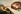

O que é Design Inteligente?
Se você estivesse caminhando e encontrasse uma pedra no caminho? Não seria de causar surpresa, uma vez que a pedra é uma estrutura bruta formada de compostos naturais que estão naquele lugar a milhares de anos!
Mas se ao caminhar você encontrasse um relógio? Você saberia que aquele objeto não foi formado naquele lugar, mas sim por alguém, uma vez que devido sua complexidade mecânica não poderia ser algo natural daquele ambiente.
Esse é o princípio do Design Inteligente, o fato de existir vida e da forma como ela é, complexa, não poderia ser creditada ao acaso!
Projeto inteligente ou design inteligente é a tradução do termo inglês intelligent design, corrente de pensamento que busca contestar as ideias evolucionistas em relação ao surgimento da vida na Terra e à seleção natural.
A base do ideal dessa corrente “científica” é a afirmação de que a diversidade biológica não se deu evolutivamente, mas sim por interferência ou condução de uma inteligência superior, não reportando essa ação a Deus ou a seres extraterrestres.
O Projeto Inteligente ganhou visibilidade graças a pressão de comunidades religiosas nos Estados Unidos, que judicialmente conseguiram inserir os conteúdos do Projeto Inteligente nas escolas. Em alguns casos os conteúdos evolucionistas foram simplesmente suprimidos do currículo.
A tentativa de dificultar o ensino de conceitos científicos, que não atendam aos ensinamentos religiosos, não é novidade nos Estados Unidos. Em 1925, no estado do Tennessee, foi promulgada uma lei que estabelecia que o professor que ensinasse qualquer teoria contrária à bíblica seria preso e quanto às escolas, as que ensinassem teorias evolutivas, teriam suas verbas estaduais cortadas. O julgamento da causa da lei gerou o título “Julgamento do Macaco”, como caracterização da polêmica gerada.
Para alguns cientistas, a apresentação do Projeto Inteligente seria apenas uma reformulação da teoria religiosa criacionista, que busca se contrapor às teorias científicas sobre o processo de evolução, principalmente às ideias de Darwin.
Como toda teoria, o Design Inteligente se apóia em três argumentos primários:
1. Complexidade Irredutível:
Refere-se ao fato de a vida ser composta de partes interligadas que dependem umas das outras para que sejam úteis. A mudança em uma parte apenas por mutação, por exemplo, não poderia ser responsável pela eficiência de toda estrutura.
2. Complexidade Específica:
Apresenta que seria impossível que padrões tão complexos, como os presentes nos seres vivos, tenham se desenvolvido através de processos do acaso.
3. Princípio Antrópico:
Acredita que a existência e desenvolvimento da vida na Terra requerem que tantas variáveis estejam perfeitamente harmonizadas, que seria impossível que todas as variáveis chegassem a ser como são apenas pelo acaso. Se nosso planeta fosse um pouco mais próximo do Sol, as condições para existência de vida seriam inviáveis.
No Brasil, a tradução do livro A Caixa Preta de Darwin - O Desafio da Bioquimica à Teoria da Evolução, pela editora Jorge Zahar Editor, do autor Behe, constitui um importante meio de informar aos interessados sobre as ideias do Desing Inteligente.
FERREIRA, Fabricio Alves. "Design Inteligente"; Brasil Escola. Disponível em <https://brasilescola.uol.com.br/biologia/design-inteligente.htm>. Acesso em 12 de maio de 2019.